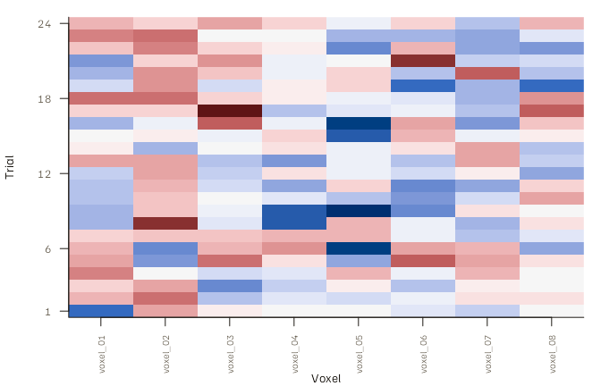
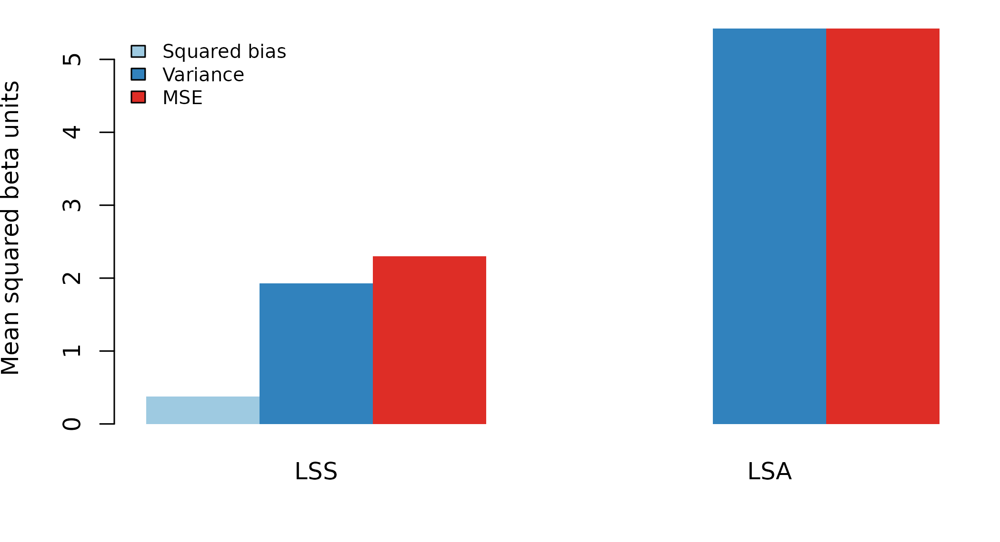

You have a preprocessed fMRI run and an event design with one
regressor per trial. Your goal is a beta estimate for every trial and
voxel, even though nearby haemodynamic responses overlap.
fmrilss fits each trial in a separate model and returns the
estimates as a trial-by-voxel matrix that can feed an MVPA, RSA,
connectivity, or reliability analysis.
This article follows one complete workflow: build a trial design, fit
LSS, check the result, handle nuisance regressors correctly, and compare
LSS with a simultaneous trial-wise GLM. The example is synthetic so that
the truth is known; in a real analysis, Y and the design
matrices come from your preprocessing and design pipeline.
What are the inputs?
lss() uses matrices with time along the rows:
-
Ycontains the observed data: time points by voxels. -
Xcontains one HRF-convolved column per trial: time points by trials. -
Zcontains regressors retained in every trial-wise model, such as run intercepts or trends. -
Nuisancecontains regressors to project out, such as motion or physiological traces.
The function returns one row per trial and one column per voxel.
Trial and voxel names are preserved when X and
Y have column names.
The following code constructs the trial design used throughout the article. Each event is an impulse convolved with the same canonical HRF, scaled to a unit peak so that trial betas are in units of peak response.
n_time <- 160
n_trials <- 24
n_voxels <- 8
sframe <- sampling_frame(blocklens = n_time, TR = 1)
onsets <- round(seq(8, 112, length.out = n_trials))
rset <- regressor_set(
onsets,
factor(seq_len(n_trials)),
hrf = normalise_hrf(HRF_SPMG1),
duration = 0,
span = 30,
summate = FALSE
)
X <- evaluate(
rset,
grid = samples(sframe, global = TRUE),
precision = 0.1,
method = "conv"
)
X <- as.matrix(X)
colnames(X) <- sprintf("trial_%02d", seq_len(n_trials))We add an intercept, a trend, and two centred nuisance traces. The
final lines create one synthetic Y with known trial
effects. Replace this simulation with your own preprocessed
time-by-voxel matrix.
set.seed(2401)
noise_sd <- 2.5
Z <- cbind(
Intercept = 1,
Linear_trend = as.numeric(scale(seq_len(n_time), scale = FALSE))
)
Nuisance <- scale(cbind(
Motion_x = sin(seq_len(n_time) / 9),
Motion_y = cos(seq_len(n_time) / 13)
), center = TRUE, scale = FALSE)
true_betas <- matrix(
rnorm(n_trials * n_voxels),
n_trials,
n_voxels,
dimnames = list(colnames(X), sprintf("voxel_%02d", seq_len(n_voxels)))
)
fixed_coef <- matrix(rnorm(ncol(Z) * n_voxels), ncol(Z), n_voxels)
nuisance_coef <- matrix(
rnorm(ncol(Nuisance) * n_voxels, sd = 1.2),
ncol(Nuisance),
n_voxels
)
mean_signal <- X %*% true_betas +
Z %*% fixed_coef +
Nuisance %*% nuisance_coef
Y <- mean_signal + matrix(
rnorm(n_time * n_voxels, sd = noise_sd),
n_time,
n_voxels,
dimnames = list(NULL, colnames(true_betas))
)| Object | Rows | Columns | Role |
|---|---|---|---|
| Y | 160 | 8 | observed voxel time series |
| X | 160 | 24 | one HRF-convolved column per trial |
| Z | 160 | 2 | shared modeled regressors |
| Nuisance | 160 | 2 | projected nuisance regressors |
| LSS result | 24 | 8 | one estimate per trial and voxel |
How do I estimate the trial betas?
The default optimized R backend is the clearest first path. Supply all parts of the model in the same call:
beta_lss is the promised 24 by 8 trial-by-voxel matrix.
A small preview is usually more useful than printing the whole
object:
round(beta_lss[1:4, 1:4], 2)
#> voxel_01 voxel_02 voxel_03 voxel_04
#> trial_01 -3.41 1.94 0.43 -0.10
#> trial_02 1.56 2.75 -1.40 -0.77
#> trial_03 0.87 1.80 -2.84 -1.15
#> trial_04 2.39 0.02 -1.08 -0.59Each row comes from a model with three parts: the target trial, the sum of all other trials, and the shared regressors. The target coefficient becomes the reported beta. Repeating that model for every trial reduces competition among individual trial columns, but it does not make a poor or rank-deficient design informative.

Estimated single-trial responses for the eight simulated voxels. Red is negative and blue is positive; deeper colour indicates larger magnitude, not statistical significance.
How should I handle nuisance regressors?
The safest route is to pass Nuisance directly to
lss(), as above. The package applies a rank-aware
Frisch–Waugh–Lovell step for the shared Z and
Nuisance span before fitting the trial models.
If you deliberately cache a projection for repeated analyses, apply
it to every matrix that remains in the model. Here we project only
Nuisance, so the same projection must transform
Y, X, and Z:
Q_nuisance <- project_confounds(Nuisance)
beta_projected <- lss(
Q_nuisance %*% Y,
Q_nuisance %*% X,
Z = Q_nuisance %*% Z
)
c(maximum_absolute_difference = max(abs(beta_lss - beta_projected)))
#> maximum_absolute_difference
#> 9.200973e-14Leaving Z unprojected changes the model and can change
the trial estimates. Also note that project_confounds()
materializes an
matrix; passing Nuisance to lss() avoids that
storage and should be your default.
When does LSS differ from LSA?
Least Squares All (LSA) estimates every trial column simultaneously. LSS replaces the non-target columns with their sum in each trial-specific model. That creates a bias–variance trade-off rather than a universal winner.
To make the comparison reproducible, the next experiment holds
X, true_betas, and all nuisance effects fixed.
Because both estimators are linear here, we can calculate conditional
squared bias and noise variance directly. We also generate 100
independent noise realizations as a check on that calculation.
| Diagnostic | Value |
|---|---|
| Residualized trial-design rank | 24.000 |
| Largest absolute trial correlation | 0.378 |
| Scaled condition number | 8.706 |
| Estimator | Squared bias (beta^2) | Variance (beta^2) | MSE (beta^2) | RMSE (beta) |
|---|---|---|---|---|
| LSS | 0.374 | 1.927 | 2.301 | 1.517 |
| LSA | 0.000 | 5.423 | 5.423 | 2.329 |
The 100-repetition check gave MSE = 2.285 for LSS and 5.296 for LSA, close to the exact values in the table.

At noise SD 2.5, LSS has more squared bias but sufficiently lower variance to produce lower mean squared error than LSA.
The noise scale matters. The calculated crossover for this fixed design and truth is SD = 0.818:
| Noise SD | LSS RMSE | LSA RMSE |
|---|---|---|
| 0.410 | 0.653 | 0.382 |
| 0.818 | 0.762 | 0.762 |
| 2.500 | 1.517 | 2.329 |
At noise SD 0.41, below the crossover, LSA has lower RMSE; at the illustrated SD 2.5, LSS has lower RMSE. The example therefore demonstrates both sides of the trade-off rather than supplying a general estimator-selection rule. Event spacing, noise, HRF mismatch, and the distribution of true trial effects can all move the crossover. Simulate conditions that resemble your own acquisition.
What should I change for real data?
Real fMRI errors are temporally correlated. Once the design is correct, pass a validated prewhitening specification so the response and every design matrix receive the same filter. This call also selects the optimized C++ backend; prewhitening has the same model meaning across backends:
beta_ar1 <- lss(
Y,
X,
Z = Z,
Nuisance = Nuisance,
method = "cpp_optimized",
prewhiten = prewhiten_options(method = "ar", p = 1)
)The simulated errors above are independent, so this call demonstrates the API and backend agreement, not a benefit from whitening. Treat AR(1) as an example starting model: choose an order and pooling strategy using residual diagnostics and acquisition-aware validation.
For multiple runs, use run-aware intercepts and supply run labels to
prewhiten_options(method = "ar", p = 1, pooling = "run", runs = ...).
Do not concatenate runs and let filtering cross a run boundary.
For a large voxel matrix, the optimized C++ backend changes computation, not the estimand:
beta_cpp <- lss(
Y,
X,
Z = Z,
Nuisance = Nuisance,
method = "cpp_optimized"
)
c(maximum_absolute_difference = max(abs(beta_lss - beta_cpp)))
#> maximum_absolute_difference
#> 1.776357e-15Start with the default backend while developing the analysis, then switch when runtime or memory justifies it. Backend agreement is a useful regression check, but agreement alone does not validate the scientific model.
What are the important limits?
-
Xmust already encode the HRF-convolved response for each trial. Use a design-aware workflow if you begin from event tables. - LSS reduces competition among individual trial columns; it cannot recover information absent from the acquisition or rescue a singular design.
- The output contains trial coefficients, not significance tests or an automatic decision about whether a trial is usable.
- Nuisance projection and prewhitening change the model. Apply them consistently to the response and every relevant design matrix.
- LSS versus LSA is a design- and noise-dependent choice. Validate it with repeated simulations, not a single attractive plot.
Where should I go next?
- Read
?lssand?prewhiten_optionsfor the complete core interface. - Continue to
vignette("oasis_method")for the OASIS solver, explicit ridge regularization, diagnostics, and multi-basis designs. - Then read
vignette("oasis_theory")for the derivation and computational contract behind that practical guide. - Next, use
vignette("lss_with_fmridesign")when your inputs are event tables, formulas, and multiple runs. - Continue to
vignette("voxel-wise-hrf")for estimated voxel-wise HRF shapes and trial coefficients. - Finish with
vignette("sbhm")for library-constrained voxel-specific shapes, score margins, and trial coefficients.
Reference
Mumford, J. A., Turner, B. O., Ashby, F. G., & Poldrack, R. A. (2012). Deconvolving BOLD activation in event-related designs for multivoxel pattern classification analyses. NeuroImage, 59(3), 2636–2643. https://doi.org/10.1016/j.neuroimage.2011.08.076